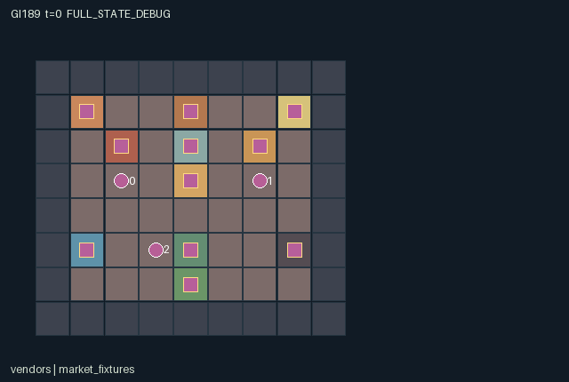

GI189 / SPATIAL
夜市合伙人
摊主竞争共用热量与水，借洗餐具和错峰烹调完成串、面与茶订单。
Original saved demonstration
Recorded native state, often authored scripts or interventions; information scope and failures are preserved in the original provenance. This is a saved demonstration, not live browser play.

Release verification episode
Untrained uniform legal actions. Actual JAX state sampled along the full original episode; full-state debug camera. No human performance or learning claim.

Run this game
crucibles play --game 189
Start Python locally, then open the address printed by the terminal. Installation, multiplayer, takeover and keyboard controls →
Objective, rewards & ending
Exact task contract
{
"objective": "Resolve six market orders with shared heat, finite water and a three-utensil cleaning circuit; choose hot or discounted cold service and balance private dish priorities.",
"natural_termination": "Every order is served or expired, otherwise horizon 108 truncates. Deadlines are 30,45,60,75,90,105.",
"interaction": "One stall start consumes heat/water another stall needs, washing converts shared water into a future usable tool, and physical handoffs/queue occupancy determine who can serve a cooling dish.",
"observation_access": "Physical state, stocks, all processing, shared resources, tool condition and order queues are public. Only role i sees its reset-sampled priority dish; no entity attribute exposes another priority."
}Declared per-step reward bounds: -2 to 3. Observability: partially_observable.
Rules
- Three original market stalls share one copper boiler, one water pool and one utensil wash counter.
- Skewers cost three heat and no water; noodles cost two heat and two water; tea costs one of each.
- A recipe needs its raw ingredient and a clean utensil. Starting it dirties that utensil immediately.
- Skewers, noodles and tea take three, four and two transitions to prepare; cooks can collect for each other.
- Food cools after seven, six or ten age ticks. Cold dishes can still complete matching orders for less reward.
- Washing takes two transitions and one water. Exactly three utensils circulate through hands, washer and clean rack.
- Coal provides four heat and water pumping transfers a finite reserve. Another stall can spend the resource first.
- The order counter accepts the earliest matching open order. A privately preferred dish gives its serving vendor an extra bonus.
- Show real pantry goods, carried dishes, copper boiler, water well, dirty utensils and stall processes in a warm lantern-market scene.
Original mechanism document (historical status wording retained)
# Night Market Crew Status: AUTHORED_NOT_EXECUTED. Prospective initial-window source attempt 0; no candidate import, rollout, training, seed search or learned-policy result. The queue is shared, but order interests differ. A vendor who lights the skewer grill can leave a partner noodle cooker waiting for heat; a washed utensil can restore another stall production at the cost of its recipe water. ## World, task and player interpretation The 9 by 8 night market contains three finite pantries, three distinct preparation stalls, a central wash counter, shared boiler, finite well, coal crate and service counter. Vendors start beside their skewer, noodle and tea stalls, each with matching raw ingredient and one clean utensil. Pantries contain four more of each ingredient. Initial resources are heat four, water pool four, water reserve twelve and coal six. All recipes and stations are usable by any vendor; roles describe starting positions only. ## Native controls and contextual feedback Supply one integer action per role to raw_step. Any legal action sequence is supported; no script ID or scripted policy is consulted by the kernel. Directional actions remain selectable for able characters before joint completion; blocked moves spend the tick and stay in place. Interaction masks show the current prerequisites. Simultaneous requests can still contend for the same finite item, tile or station. - 0: Wait. Let cooking, washing, cooling, boiler loss and queues advance. - 1: Walk north. Move one cardinal cell; fixtures and occupied cells block. - 2: Walk east. Move one cardinal cell; fixtures and occupied cells block. - 3: Walk south. Move one cardinal cell; fixtures and occupied cells block. - 4: Walk west. Move one cardinal cell; fixtures and occupied cells block. - 5: Take pantry ingredient. Beside a pantry with empty hand, take one finite raw item; lowest eligible pantry index breaks ties. - 6: Start matching stall recipe. Beside the matching idle stall with raw item and clean utensil, consume the recipe heat/water, start processing, and dirty your utensil. - 7: Collect finished dish. Beside a stall with an empty hand, take its hot or cold dish and current age. - 8: Serve matching order. Beside central counter with hot/cold food, fulfill the earliest open order of that dish type. - 9: Take one coal. At the coal crate with empty hand, take one of six initial coal units. - 10: Stoke shared boiler. At the boiler with coal, add four shared heat if current heat is at most four. - 11: Pump finite well water. At the well with pool at most four, transfer up to two finite reserve units into the shared water pool. - 12: Wash dirty utensil. At the washing counter with a dirty utensil, consume one water and start two-tick washing if idle. - 13: Take clean utensil. At the washing counter with no utensil, take one available clean utensil. - 14: Pass carried item. Give the item and freshness age to the lowest-index adjacent empty-handed vendor. - 15: Pass utensil. Give your clean or dirty utensil to the lowest-index adjacent vendor without one. - 16: Discard food. Remove raw, hot or cold food and record the ingredient loss. Coal is not discarded by this action. Movement uses conservative occupancy: another vendor old tile blocks entry, and ties for a free destination rotate with t modulo three. Interactive claims are then processed in the same rotating order, each rechecking shared resource and station state. This permits two vendors to have individually legal recipe starts even when their combined heat demand exceeds supply. The later request is visibly denied, consumes no ingredients or tool, and can be reconsidered next tick. Per-role denied flags also show blocked movement and invalid requests. ## Exact transition, costs and completion Recipe costs (heat, water, processing ticks) are skewers (3,0,3), noodles (2,2,4), tea (1,1,2). The loading tick is the first processing transition. Output begins at age zero, then food age continues across stall, hand and handoff; skewers cool at seven, noodles at six and tea at ten. Cooling changes hot codes 4..6 to cold codes 7..9, preserving the dish and ingredient count. Hot service pays every vendor 0.5 and adds 0.4 to the server if it matches their private priority; cold service pays 0.15 and a matching bonus 0.1. Expired orders cost all vendors 0.2. Boiler heat falls by one every fourth transition. Coal stoking adds four heat up to eight. Pumping moves at most two reserve water into a pool with capacity six. Washing consumes one water and temporarily holds one dirty utensil before adding it to the common clean rack. ## Information and visible scene Every physical stock, hand, utensil, process timer, cooled/hot dish, queue and blocked-request flag is public in both observations and rendering descriptors. The reset key only permutes private priority dish types across roles. A role view may display its own priority beside its name, but another role priority is not present in public entity attributes. Tool age is not invented; the implemented tool state is none/clean/dirty and food age belongs to actual dishes. Independent cooperative-kitchen art direction: a warm lantern night market with distinct skewer grill, noodle pot and tea brewer, striped cloth stall roofs, produce baskets, metal utensils, copper boiler and blue well header. Aproned vendors visibly carry raw bundles, steaming plated dishes, cooled dishes or coal. Dirty and clean tools have different surface treatment. Fixture status binds stock, timer, ready food, water or heat at each literal position; counters annotate those objects rather than replacing the market with a dashboard. All artwork is original and category-inspired. The scene is complete declarative presentation data with exact source/manifest identity. It does not implement a browser, keyboard or animation engine. A later trusted human-play adapter must separate Enter game from Watch replay, pass deliberate joint actions into this unchanged kernel, show legal controls, and preserve role visibility. Human play is separate from formal experiments. ## Cross-agent mechanisms and alternative responses A skewer request can consume three of the four initial heat and prevent a simultaneously requested noodle recipe. A vendor can instead yield heat to noodles and tea, trade tools, transport coal, pump water or wash on behalf of another stall. Washing competes with noodle and tea water use, making maintenance timing part of the food queue. Cold delivery offers a lower-value fallback when a handoff route is delayed; waiting for a privately preferred hot order can hurt the shared queue. These resource and opportunity effects are direct game rules, not inferred from a similarity of rendered characters. ## Declared invariants and implementation limits Three utensils are conserved across positive held tool states, the clean rack and a positive wash timer. Water pool + reserve + water_used equals sixteen. Coal in crate + held coal + coal_burned equals six. For each dish type, pantry stock plus initial/raw carried units, active cooking job, ready/held hot or cold dishes, served_kind and waste conserves five ingredients. Shared resources cannot become negative because every transaction rechecks availability. Heat lies in 0..8, water pool 0..6, reserve 0..12, wash timer 0..2, and all vendors occupy distinct walkable cells. Cooling never fabricates a new ingredient. The world uses global shared plumbing and boiler supply, not a simulated pipe-pressure network. State leaves use fixed-shape int32, bool and, where declared, float32 arrays. Small signed fields are represented as int32; no PRNG-key surrogate is stored. Only reset uses the supplied key where explicitly stated. raw_step is deterministic for a given state/action and ignores its unused key. Natural termination has priority over the horizon. A terminal input preserves every state leaf and observation, returns zero float32 rewards and joint dones, and preserves terminated/truncated causes. No autoreset occurs in the kernel. ## Literal source evidence - Literal fixture geometry and finite starting resources: candidate.py:12 (def reset). - Shared heat and water admission: candidate.py:44 (recipe =). - Visible contention denial: candidate.py:93 (now_legal =). - Recipe consumption changes partner availability: candidate.py:106 (s["heat"] = s["heat"]-heat_cost). - Tool cleaning and water use: candidate.py:141 (wash = act==12). - Temporal hot-to-cold conversion: candidate.py:172 (cooled =). - Different interests over delivered dishes: candidate.py:128 (reward = reward.at[i].add). - Absorbing terminal state: candidate.py:194 (s = jax.tree.map). - Required boundary signatures: candidate.py:12, candidate.py:63, candidate.py:37, candidate.py:71. ## Frozen author hypotheses The staggered noodle-and-tea diagnostic starts those two compatible recipes, collects tea, walks it to central service and delivers it. The contention diagnostic simultaneously requests skewers and noodles. The paired hypothesis changes only agent_0 initial start to wait while agent_1 still requests noodles, predicting a different agent_1 processing opportunity, carried ingredient, clean/dirty tool and denied flag. It makes no claim about accumulated return or a learned strategy. playthrough.json contains literal joint integer vectors, seed 0 and UNEXECUTED_AUTHOR_HYPOTHESIS statuses. Seed 0 is a fixed author convention, not an observed good seed. Script legality and effects are reasoned from source only. No execution, score, success guarantee, effect magnitude, solvability, non-isomorphism or learning/transfer claim is made. ## Source and reference provenance All game rules and kernel code were authored for this assigned game. No upstream implementation or commercial game asset was copied. The human-play and independent-family requirements are recorded with actual paths, bytes and SHA256 in author_input_freeze.json, together with every other closed input consumed. - JaxMARL supplied README: parallel agent-keyed interfaces and __all__ for a later adapter. This package retains the assigned flat native kernel. https://github.com/bold-lab-ai/JaxMARL/blob/main/README.md - Pgx supplied README: explicit legal masks, immutable game state and caller-supplied randomness are integration concepts; no board-game mechanic was copied. https://github.com/sotetsuk/pgx/blob/main/README.md - Craftax supplied README: block materials, consequential inventory and explicit raw/autoreset separation informed the category/integration discussion; no Craftax world or rule implementation is used. https://github.com/MichaelTMatthews/Craftax/blob/main/README.md - PureJaxRL README and Craftax_Baselines ppo_rnn.py were read as end-to-end JAX/recurrent-reset integration context. They are algorithm implementations, not a game library or replacement for the frozen experimental learner. No algorithm code, weights, dependencies or reported scores enter this game. https://github.com/luchris429/purejaxrl/blob/main/README.md ; https://github.com/MichaelTMatthews/Craftax_Baselines/blob/main/ppo_rnn.py This environment can supply a future cross-environment adaptation task only after independent hash-bound integration. Actual R0 interface checks, eager/JIT/vmap behavior, paired effects, human input, replay, visual fidelity, training, scientific comparisons and transfer remain unverified.
Commands
Roles & abilities
agent_0 Saffron: starts beside skewers with raw ingredient and clean tool
agent_1 Jade: starts beside noodles with raw ingredient and clean tool
agent_2 Plum: starts beside tea with raw ingredient and clean tool
Observation permissions
Training receives only the original observation rows. Role cameras use declared visibility; debug cameras are explicitly marked. Local benchmark records log debug exposure and role takeover history.
Exact observation layout
[
{
"slice": [
0,
1
],
"meaning": "t / 108",
"visibility": "public"
},
{
"slice": [
1,
73
],
"meaning": "Actual public map / 12, row-major yx",
"visibility": "public"
},
{
"slice": [
73,
79
],
"meaning": "All vendor xy / 8",
"visibility": "public"
},
{
"slice": [
79,
82
],
"meaning": "All held item codes / 10",
"visibility": "public"
},
{
"slice": [
82,
85
],
"meaning": "All held dish ages / 10",
"visibility": "public"
},
{
"slice": [
85,
88
],
"meaning": "All utensil states / 2",
"visibility": "public"
},
{
"slice": [
88,
91
],
"meaning": "Pantry stocks / 4",
"visibility": "public"
},
{
"slice": [
91,
95
],
"meaning": "Coal / 6, water pool / 6, finite reserve / 12, boiler heat / 8",
"visibility": "public"
},
{
"slice": [
95,
98
],
"meaning": "Stall processing ticks / 4",
"visibility": "public"
},
{
"slice": [
98,
101
],
"meaning": "Stall ready dish codes / 9",
"visibility": "public"
},
{
"slice": [
101,
104
],
"meaning": "Stall food ages / 10",
"visibility": "public"
},
{
"slice": [
104,
106
],
"meaning": "Washing ticks / 2 and clean utensil rack / 3",
"visibility": "public"
},
{
"slice": [
106,
112
],
"meaning": "Order statuses / 2",
"visibility": "public"
},
{
"slice": [
112,
118
],
"meaning": "Order deadlines / 108",
"visibility": "public"
},
{
"slice": [
118,
124
],
"meaning": "Order required dish types / 2",
"visibility": "public"
},
{
"slice": [
124,
127
],
"meaning": "Each vendor current denied-request flag",
"visibility": "public"
},
{
"slice": [
127,
137
],
"meaning": "Current transition flags in manifest order",
"visibility": "public"
},
{
"slice": [
137,
138
],
"meaning": "Own private priority dish type / 2",
"visibility": "self"
},
{
"slice": [
138,
141
],
"meaning": "Own role identity one-hot",
"visibility": "self"
}
]Entity visibility & attributes
[
{
"id": "vendors",
"kind": "agent",
"count": 3,
"position": [
"pos"
],
"active": [
"agent_active"
],
"visibility": [
"agent_visible"
],
"attributes": [
{
"state_path": [
"carry"
],
"meaning": "0 empty; 1..3 raw skewer/noodle/tea; 4..6 hot dishes; 7..9 cold dishes; 10 coal",
"display": "category"
},
{
"state_path": [
"meal_age"
],
"meaning": "Food age, bounded by recipe cooling window",
"display": "number"
},
{
"state_path": [
"tool"
],
"meaning": "Utensil: 0 none, 1 clean, 2 dirty",
"display": "category"
},
{
"state_path": [
"denied"
],
"meaning": "Current requested move/interaction failed its spatial or shared-resource condition",
"display": "flag"
}
]
},
{
"id": "market_fixtures",
"kind": "object",
"count": 11,
"position": [
"station_pos"
],
"active": [
"station_active"
],
"visibility": [
"station_visible"
],
"attributes": [
{
"state_path": [
"station_status"
],
"meaning": "Rows 0..2 pantry [stock,0,0]; 3..5 stall [timer,dish,age]; 6 wash [timer,clean,0]; 7 boiler [heat,0,0]; 8 well [pool,reserve,0]; 9 coal [stock,0,0]; 10 service [served,open,missed]",
"display": "number"
}
]
}
]Actual verification & provenance
Per-game execution receipt
{
"game": "gi189",
"status": "PASS",
"verification_revision": 2,
"source_sha256": "e84f3e65b6e7a92b32caf7a1a37a73e2754cbda8e399056d07f9fcf53e0ec778",
"seed": 20261101,
"runtime": {
"jax": "0.4.38",
"numpy": "1.26.4",
"devices": [
"TFRT_CPU_0"
]
},
"dimensions": {
"num_agents": 3,
"observation_size": 141,
"num_actions": 17,
"max_steps": 108
},
"checks": {
"eager_reset": {
"status": "PASS",
"seconds": 1.2312085628509521
},
"observation_spaces_legal_masks": {
"status": "PASS",
"seconds": 1.3123760223388672
},
"eager_step": {
"status": "PASS",
"seconds": 2.898549795150757
},
"jit_reset": {
"status": "PASS",
"seconds": 0.15273094177246094
},
"jit_step": {
"status": "PASS",
"seconds": 3.715843439102173
},
"eager_jit_integer_parity_float_measurement": {
"status": "PASS",
"seconds": 0.0010759830474853516
},
"jit_vmap_reset": {
"status": "PASS",
"seconds": 0.4238152503967285
},
"jit_vmap_step": {
"status": "PASS",
"seconds": 4.342145204544067
},
"outer_autoreset_api": {
"status": "PASS",
"seconds": 4.1845948696136475
},
"full_original_horizon_episode_and_render": {
"status": "PASS",
"seconds": 1.5577750205993652
}
},
"human_scores": null,
"browser_controls": "PENDING",
"failures": [],
"elapsed_seconds": 21.152243852615356,
"float_parity_max_abs": 5.960464477539063e-08,
"numerical_parity": "UNDETERMINED_NONZERO_FLOAT_DIFFERENCE",
"raw_terminal_absorbing": "PASS",
"terminal_outer_reset": "PASS",
"episode_steps": 105,
"scripted_random_returns": [
-1.2000000178813934,
-1.2000000178813934,
-1.2000000178813934
],
"terminal": true,
"demo_information": "FULL_STATE_DEBUG",
"demo_frames": 28,
"render_roles_checked": 3
}Chromium control verification
{
"game": "gi189",
"status": "PASS",
"human_scores": null,
"engineering": true,
"checks": [
"catalog_selected_and_real_native_reset",
"keyboard_native_direction_command",
"dom_queue_and_native_step",
"second_participant_ownership_and_native_joint_step",
"all_roles_individually_controllable_no_role_cap",
"explicit_debug_camera",
"release_to_pure_ai_without_reset",
"close_session_preserves_log"
],
"ui_sha256": "96243f9de144b80b5e20a114330e2206bdcd58d3efc9c6f13bbc08b95cacc14d",
"keyboard_action_id": 1,
"seconds": 7.0318028926849365
}Original identity and file hashes
{
"id": 189,
"key": "gi189",
"title": "夜市合伙人",
"summary": "摊主竞争共用热量与水，借洗餐具和错峰烹调完成串、面与茶订单。",
"tags": [
"厨房协作",
"共享热量"
],
"family": "spatial",
"dimensions": {
"num_agents": 3,
"observation_size": 141,
"num_actions": 17,
"max_steps": 108
},
"source_sha256": "e84f3e65b6e7a92b32caf7a1a37a73e2754cbda8e399056d07f9fcf53e0ec778",
"manifest_sha256": "54f6d9720476b40248e7a581a76614ad8fd7a44c8bf59df41dc5a2f8e4161675",
"files": [
{
"file": "candidate.py",
"sha256": "e84f3e65b6e7a92b32caf7a1a37a73e2754cbda8e399056d07f9fcf53e0ec778",
"bytes": 12210,
"origin": "work/exp_2/game_incubator_v3/community_games222_225_visualization_root222_v1/native154_candidate/registry/v2/games/game-v3-00189/candidate.py"
},
{
"file": "manifest.json",
"sha256": "54f6d9720476b40248e7a581a76614ad8fd7a44c8bf59df41dc5a2f8e4161675",
"bytes": 16143,
"origin": "work/exp_2/game_incubator_v3/community_games222_225_visualization_root222_v1/native154_candidate/registry/v2/games/game-v3-00189/manifest.json"
},
{
"file": "scene.json",
"sha256": "26311c53c40f7fb7a6df8c709cd778825e63cb556fd6d1b6fb611a888d859be5",
"bytes": 9230,
"origin": "work/exp_2/game_incubator_v3/community_games222_225_visualization_root222_v1/native154_candidate/registry/v2/games/game-v3-00189/scene.json"
},
{
"file": "mechanism.md",
"sha256": "c644c9d49019b53f8eac8a11037d111ff48142b4775a8d05b8847f0eb95fc1d6",
"bytes": 11427,
"origin": "work/exp_2/game_incubator_v3/sources/game-v3-00189/attempt_00/mechanism.md"
},
{
"file": "playthrough.json",
"sha256": "62b2b75c5503d17d15c666ddc6201eb8654ad52ef60b44dcaa00ca544a682901",
"bytes": 2710,
"origin": "work/exp_2/game_incubator_v3/sources/game-v3-00189/attempt_00/playthrough.json"
}
],
"original_status": "NATIVE154_REFERENCE",
"original_saved_replay": true,
"release_validation": "PASS",
"human_scores": null,
"browser_validation": "PASS"
}